<!--
  Generated template for the LoginPage page.

  See http://ionicframework.com/docs/components/#navigation for more info on
  Ionic pages and navigation.
-->
<ion-content class="bgLoginRegister" padding>
    <ion-grid style="padding-top: 5em; padding-bottom: 2.5em;">
      <ion-row>
          <form [formGroup]="loginForm" (ngSubmit)="submitLogin()">
        <ion-col col-1></ion-col>
        <ion-col col-10 style="padding-top: 5em; padding-bottom: 2.5em;">
          
        </ion-col>
        <ion-col col-1></ion-col>

        
        <ion-col col-1></ion-col>
        <ion-col col-10 >
          <!--Nome dado na validação do formulário (formControlName="email") nome dado no login.ts da página  -->
          <ion-item class="input-login">
            <ion-input type="email"  placeholder="email" formControlName="email"></ion-input>
            <ion-icon name="ios-mail" class="icon-login" item-left></ion-icon>
          </ion-item>
        </ion-col>
        <ion-col col-1></ion-col>

        <ion-col col-1></ion-col>
        <ion-col col-10>
          <!--Nome dado na validação do formulário (formControlName="password") nome dado no login.ts da página  -->
          <ion-item class="input-login">
            <ion-input type="password"  placeholder="senha" formControlName="password"></ion-input>
            <ion-icon name="ios-key" item-left class="icon-login"></ion-icon>
          </ion-item>
        </ion-col>
        <ion-col col-1></ion-col>

        <ion-col col-1></ion-col>
        <ion-col col-10>
          <button ion-button class="btn btn-gradient-primary" full round type="submit" ion-button [disabled]="loginForm.invalid">Entrar</button>
        </ion-col>
        <ion-col col-1></ion-col>

        </form>

        <ion-col col-12 text-center>
          <p style="color: #fff;" >Não tem uma conta? Crie aqui</p>
        </ion-col>


        <ion-col col-1></ion-col>
        <ion-col col-5>
          <!--Nomeia a página para redirecionamento ([navPush]="'creater-doador'") nome dado no HTML da página  -->
          <button ion-button color="light" round full class="btn btn-sign-in" [navPush]="'create-doador'">Doador</button>
        </ion-col>
        <ion-col col-5>
          <!--Nomeia a página para redirecionamento ([navPush]="'create-instit'") nome dado no HTML da página  -->
          <button ion-button color="light" round full class="btn btn-sign-in" [navPush]="'create-instit'">Instituição</button>
        </ion-col>
        <ion-col col-1></ion-col>

        <ion-col col-12 text-center  >
          <a style="color: #fff;" href="">Esqueceu a senha? Clique aqui.</a>
        </ion-col>
        
      </ion-row>
    </ion-grid>

</ion-content>
<object id="__symantecPKIClientMessenger" data-supports-flavor-configuration="true" data-extension-version="0.5.0.109"
    style="display: none;"></object><span id="__symantecPKIClientDetector" style="display: none;">__PRESENT</span>